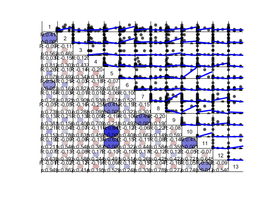
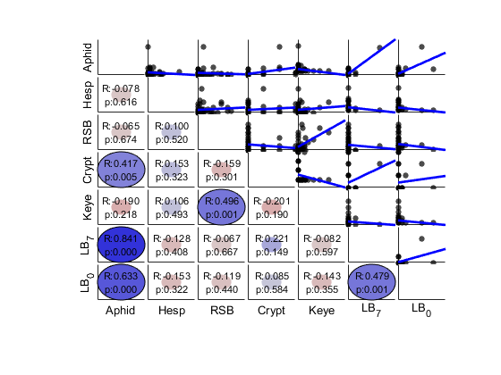
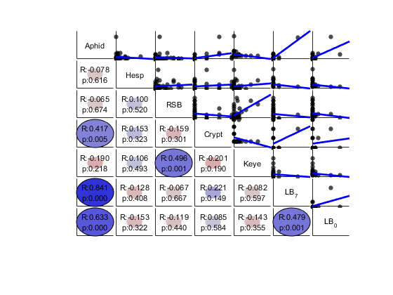
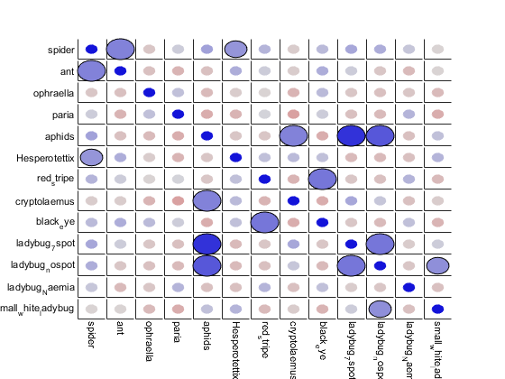
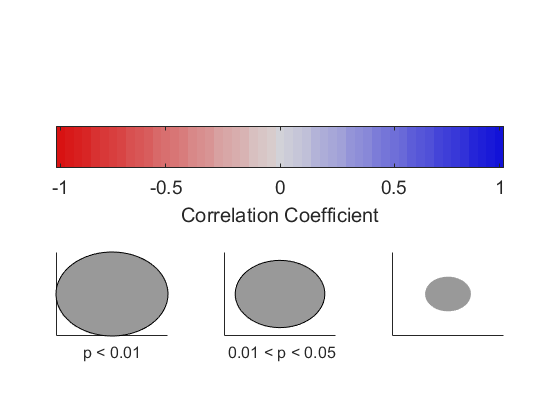
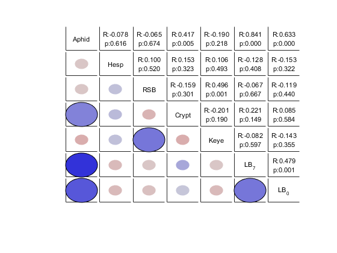
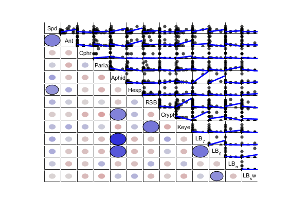
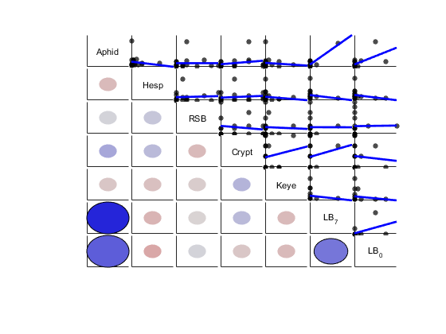

Example of using function [mycorrplot_1]
This is an example file demonstrating how to use * [mycorrplot_1] * to viisualize the result of correlation (i.e. the results from * corr(X) *).
Use my Iva insect data [X_community] as example
by Wei-Ting Lin, 2014/10/15
- update 2015/10/31 : can take table as input data, remove NaN with nancorr.m
Contents
mycorrplot_1
This function should present the result of correlations in a figure with table-like structure. Visualize the result of: corr[X]
R values and Significance levels (range of P values) are visualized as the color and sizes of circle. User can also chose to see scatterplots, and/or text with R and P values on one triangle.
Inspeired by
- corrplot : from Matlab econometrics tool box
- correlationCircles:by David Legland http://www.mathworks.com/matlabcentral/fileexchange/45698-correlation-circles
- R package corrplot: http://cran.r-project.org/web/packages/corrplot/vignettes/corrplot-intro.html
- num2cellstr.m : by Andrew Watson http://www.mathworks.com/matlabcentral/fileexchange/20639-num2cellstr
Dependent files
[plot_circle.m] [mycolor.m] [nancorr.m] [tnames.m]
Setting up and load data
clear;clc % cd 'C:\Users\ASUS\Dropbox\DataCoding\MATLAB\utility_wtl\X_examples' % cd 'C:\Users\Wei-Ting\Dropbox\DataCoding\MATLAB\utility_wtl\X_examples' load ./X_data/X_community % addpath 'C:\Users\Wei-Ting\Dropbox\DataCoding\MATLAB\utility_wtl\Utility_plot' % addpath 'C:\Users\Wei-Ting\Dropbox\DataCoding\MATLAB\utility_wtl\Utility_stat'
[X_community] contains two matrices, and two "name" files:
- insect_data : 44 x 13 matrix, data for 44 patches and 13 species
- patch_met : 44 x12 matrix, data for 44 patches and 12 patch attributes
- insect_names : content of the insects (each column in [insect_data])
- met_names : content of the patch attributes I like to keep data as a matrix and put their names in a seperate file. We are only using the [insect_data] here.
Data preparations
Short names The names in insect_names can be too long for some display, so I create a short version of names
shortnames = {'Spd','Ant','Ophr','Paria','Aphid','Hesp','RSB','Crypt','Keye','LB_7','LB_0','LB_n','LB_sw'}
shortnames =
Columns 1 through 7
'Spd' 'Ant' 'Ophr' 'Paria' 'Aphid' 'Hesp' 'RSB'
Columns 8 through 13
'Crypt' 'Keye' 'LB_7' 'LB_0' 'LB_n' 'LB_sw'
make a table
Tdata = array2table(insect_data,'VariableNames',shortnames);
Tdata(1:3,:)
ans =
Spd Ant Ophr Paria Aphid Hesp RSB Crypt Keye LB_7 LB_0 LB_n LB_sw
_______ _______ ____ _____ ______ _______ _______ _____ _______ ____ _______ ____ _______
1.6667 3.3333 0 0 7.6667 0.16667 0.16667 0 0.66667 0 0.16667 0 0
0.83333 0 0 0 67.5 0 0 0 0 0 1.5 0 0.33333
1.1667 0.33333 0 0 14 0 0.33333 0 0 0 0 0 0
Using [mycorrplot_1]
Syntax
mycorrplot_1( X, xnames, type, colorbaron, textin )
- X : data; we are interested in correlation between each pair of columns in X; as in corr(X)
- xnames : name of each column in X, stored in cell array of strings; default is {'1','2','3',....}
- type : style of output, can be 'C','T','S','B'; default is 'B'; see section * Example of "type" *
- colorbaron : 0 or 1; whether to plot out the legend or not; default is 0
- textin : 0 or 1; whether to put labels in the diagnal; default is 1 if xnames not specified, 0 otherwise
Examples of usage: default
Equal to mycorrplot_1( insect_data, {'1','2','3',....,'13'}, 'B', 0, 1 )
mycorrplot_1(insect_data)
Examples: working with table
The default setting, if input is a table, variable names will be inported
mycorrplot_1(Tdata(:,5:11)) % (for smaller plot we use only a subset here)
 In this example, variable names are short enough so we could put variables in the diagnal.
mycorrplot_1( Tdata(:,5:11), [] , [], [], 1 ) % (for smaller plot we use only a subset here) % % * tip: Use [] as place holder for other parameters; default values will be used
Example of "type"
'C' means put all circles
mycorrplot_1(insect_data, insect_names, 'C',1,0)
  'T' means put text and circles
don't need legend everytime, set colorbaron (the 4th parameter) to 0
mycorrplot_1(Tdata(:,5:11),[], 'T',0,1) % use table input in this example
'S' means put scatterplot and circles
mycorrplot_1(insect_data, shortnames ,'S',0,1) % If the names are short enough, we can put them in the diagnal boxes
'B' means put "Both" scatter plot and tex; 'B' is the default
In this case, text will be put on top of the circles.
uncomment the belowed code for demo mycorrplot_1(insect_data(:,1:6), shortnames(:,1:6),'B',0,1)
Example: remove NaN
For correlaiton in each variable pairs, rows with NaNs
Create a mock data with NaNs
nandata = Tdata(1:20,5:11);
nandata{[1 2],3} = NaN; nandata{7,4:6} = NaN;
A message will apear in command window if data includes NaN
mycorrplot_1(nandata, [] ,'S',[],1)
NaN removed before calculating correlation; see nancorr.m for detail